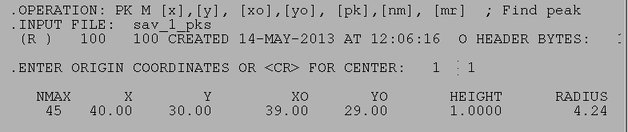

| .OPERATION: | PK M [x],[y],[xo],[yo],[pk],[nm],[mr] | ; Search for max peak in image |
| .INPUT FILE: | sav_1_pks | ; Image (input) |
| .ORIGIN COORDINATES OR <CR> FOR CENTER: | 1, 1 | ; Relative to upper left corner |
| INPUT IMAGE |
|---|
| sav_1_pks |
| RESULTS FILE |
|---|
|  |
| pkm_resu |